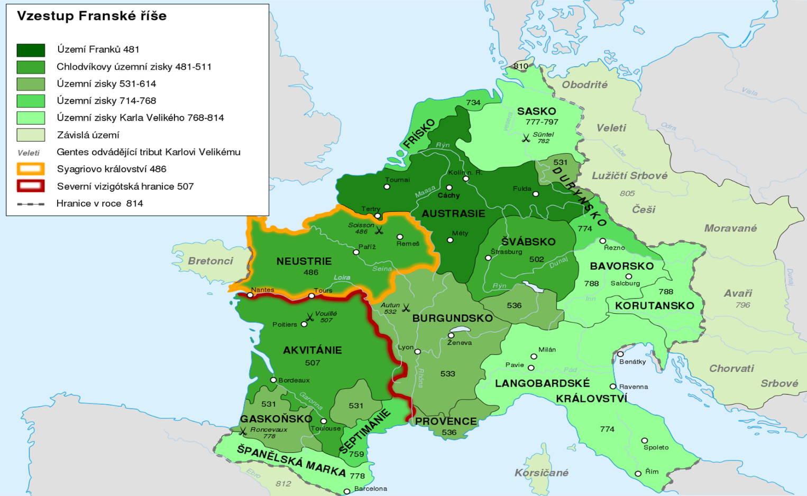
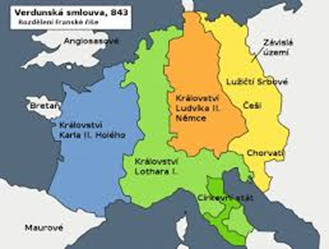

Lenny systém
Najprv pohanstvo
potom kresťanstvo
 
ríša sa rozprestierala :
od Biskajského zálivu po rieku Odra
od Baltského po Stredozemné more
Merovejovci
chlodvík
zjednotil frankov
karol martel
v roku 732 odrazil pri bitke arabov
pipin 3
PIPINOVA DOTÁCIA
daroval územie a položil základy pápežského štátu
titul kráľa
karoľovci
karol 1. veľký
titul rímskeho cisára
najväčší rozmach ríše
marky – pohraničné vojensko-správne územia
rozvoj kultúry, vzdelania
KAROLÍNSKA RENESANCIA
ľudovít 1. pobožný
hah Verdunská zmluva (843) – zánik Franskej ríše